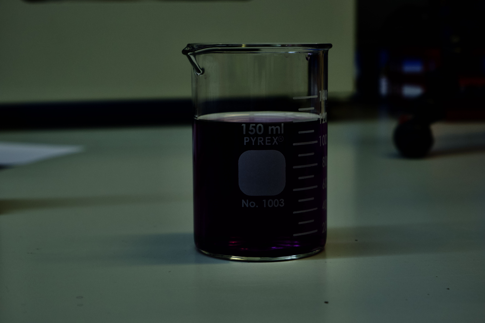
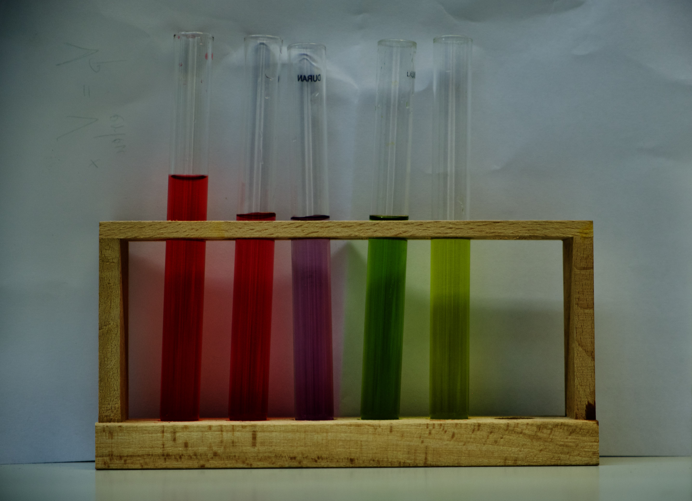
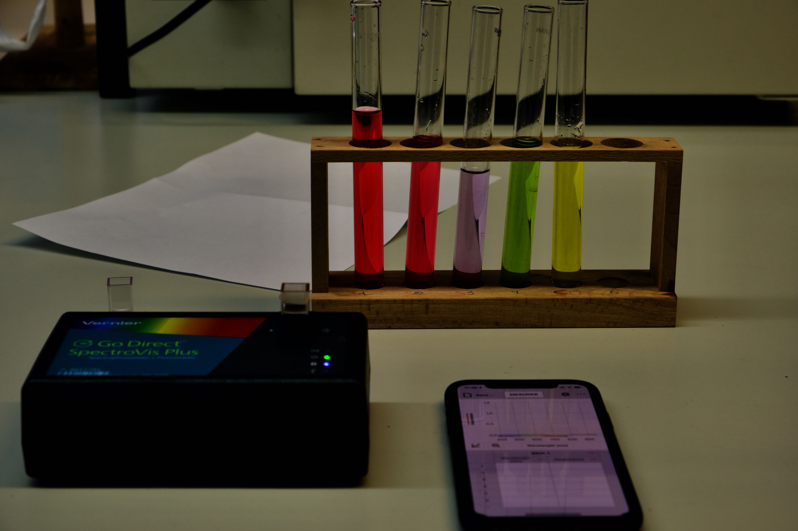

Concentrations molaires et dilution
Exercice 1 : Solution de réhydratation
On peut effectuer des injections de solution aqueuse de fructose, de formule $\ce{C6H12O6}$, pour prévenir la déshydratation. De telles solutions sont obtenues en dissolvant une masse $m = \pu{25,0 g}$ de fructose pour $\pu{500 mL}$ de solution finale.
-
Déterminer la quantité de matière de fructose correspondant à la masse indiquée dans l’énoncé.
-
En déduire la concentration molaire de ces solutions en fructose.
[Lire]
Le design Culinaire
Situation expérimentale sur le site du Livre Scolaire (hors questions)
Images du montage expérimental
Solution d’extrait de choux rouge 
Échelle de teinte 
Montage expérimental avec spectrophotomètre 
Exploitation des données
-
Télécharger le logiciel Spectral Analysis du fabriquant Vernier. Il existe des versions pour tous les systèmes d’exploitations.
-
Télécharger les fichiers résultats suivants (clic droit et enregistrer) et les ouvrir à tour de rôle à l’aide du logiciel juste téléchargé :
[Lire]
Composition Chimique des Solutions
Concentrations massique et molaire
Qu’est-ce qu’une solution ?
Exercice
On réalise une solution aqueuse de permanganate de potassium en introduisant $m = \pu{0,79 g}$ de permanganate de potassium solide, $\ce{KMnO4}$, dans $V_{0} = \pu{250 mL}$ d’eau distillée. On note $(S_0)$ cette solution et on suppose que la dissolution s’effectue sans effet de volume.
- Le permanganate de potassium est le soluté. Qu’est-ce cela signifie ?
Réponse
Un soluté est une espèce chimique ou un ensemble d’espèces chimiques que l’on dissout dans un solvant.
La quantité de matière d’un soluté est très inférieure à la quantité de matière du solvant.
L’unité de quantité de matière : la mole
Document 1,2
La quantité de matière et son unité
Introduction
- En chimie, lorsqu’on pèse par exemple $\pu{1 g}$ de solide ou qu’on mesure $\pu{10 mL}$ d’une solution, manipule-t-on :
a) un petit nombre, b) un grand nombre, c) un très grand nombre, d) un nombre inimaginablement grand
d’entités microscopiques (atomes, molécules, ions) ?
Réponse
Un nombre inimaginablement grand
- L’ordre de grandeur du nombre d’entités microscopiques manipulées est :
a) 10 b) $10^6$ c) $10^9$ d) $10^{12}$ e) $10^{18}$ f) $10^{24}$ ?
Pourquoi créer une nouvelle grandeur pour exprimer le nombre d’objets ?
Document 1,2
Et si nous étions en charge de la gestion du papier pour les photocopieurs du lycée ?
Informations : une feuille de papier
- Dimensions : $210 \times \pu{297 mm}$ ;
- Masse : $m = \pu{80 g/m2}$.
Étude des besoins pour une chaîne d’approvisionnement
- Est-il possible de déterminer, à l’aide d’une règle graduée, l’épaisseur d’une feuille de papier ?
Réponse
La dernière graduation de la règle est le millimètre, longueur bien supérieure à l’épaisseur d’une feuille de papier.
[Lire]Espèces chimiques
Document 1,1
Espèces chimiques, corps purs et mélange
Une espèce chimique est caractérisée par son aspect (état physique, couleur), par son nom, sa formule chimique et par des grandeurs physiques (solubilité, masse volumique, densité, température de fusion, température d’ébullition, etc.).
- Le dioxygène, gaz de formule chimique $\ce{O2}$, l’acide salicylique, solide de formule chimique $\ce{C7H6O3}$, l’eau, liquide de formule chimique $\ce{H2O}$, pris séparément sont des corps purs.
Expliquer ce qu’est un corps pur.